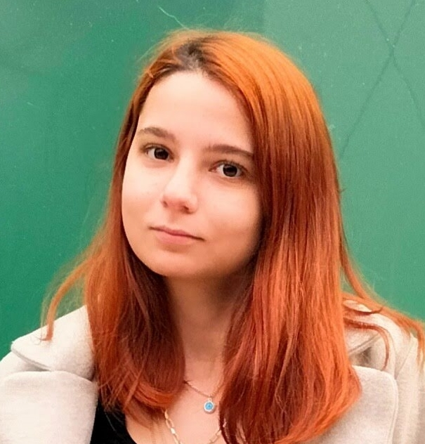

HAKKIMDA
Ben Kimim?
Merhaba, ben Büşra Aylin Mercan. Bandırma Onyedi Eylül Üniversitesi'nde bilgisayar mühendisliği 2. sınıf öğrencisiyim. 3.dönemimde teknofeste hazırlanıyorum arkadaşlarımla. Drone projesinde görüntü işleme yapmaktayız. Bunun yanında yeni bir proje fikri ile TUBITAK'a da katılmayı düşünüyorum. Yazın okuldan hocamızın yanında staj yapacağım. Kendimi okul dışında geliştirmeyi seviyorum. Görüntü işleme ve yapay zeka alanı ilgimi çekiyor.
Okul dışında arkadaşlarımla vakit geçirmekten keyif alıyorum. Bilgisayarda tft oynuyorum. Dernekte başkan yardımcılığı yapmaktayım. Dernekte bazı zamanlar etkinlikler düzenliyorum.
GÖRDÜĞÜM PROGRAMLAMA DİLLERİ
- Python
- Html
- Css
- Js
- MSSql
- Java
- C
- C++